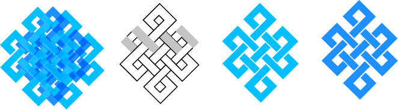
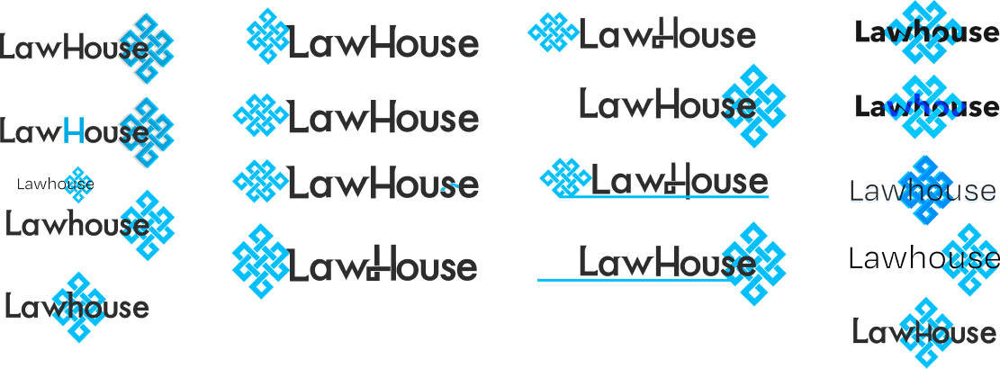
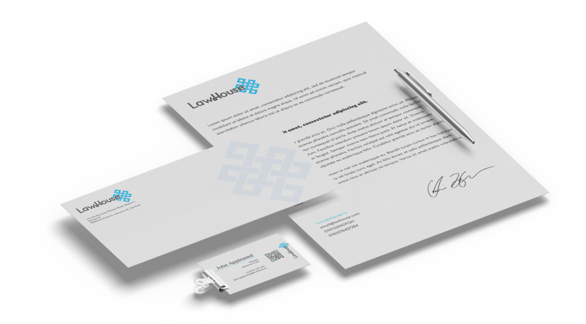

The client: A 2021 Bucharest-based law firm. They needed a logo that incorporated the idea of “modern, serious
and reliable”, along with the usage of the symbol of the Endless Knot.
This was one of the more serious and toned down projects I tackled, and it was quite a challenge, since the
client had very specific details they were particular about, and I had to think of ways to cater all of that.
The logo features a modified Futura typeface, one that gained some geometric serifs and knots and spaces.


